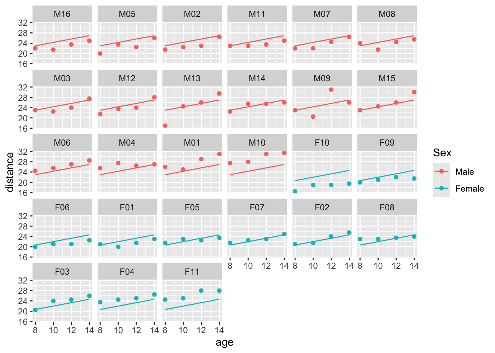
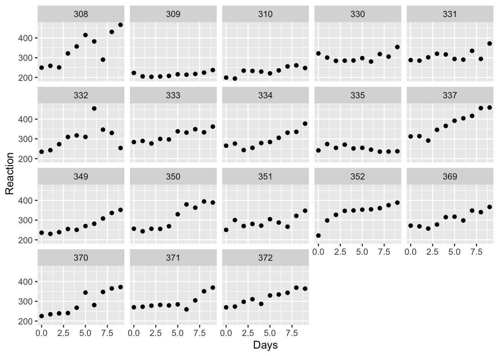
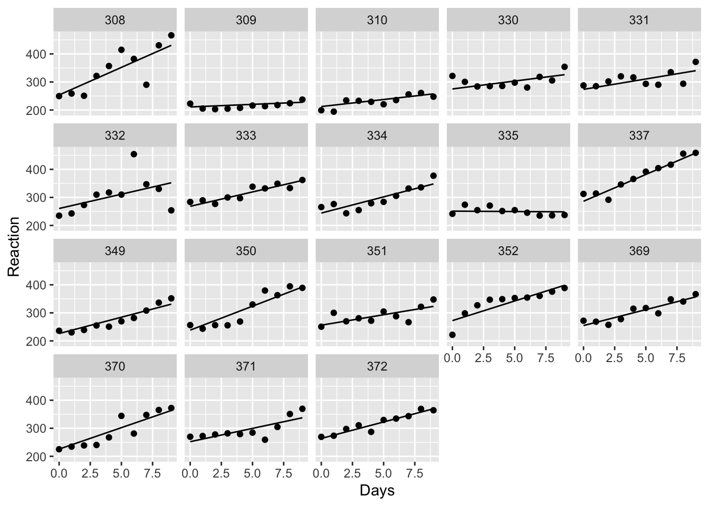
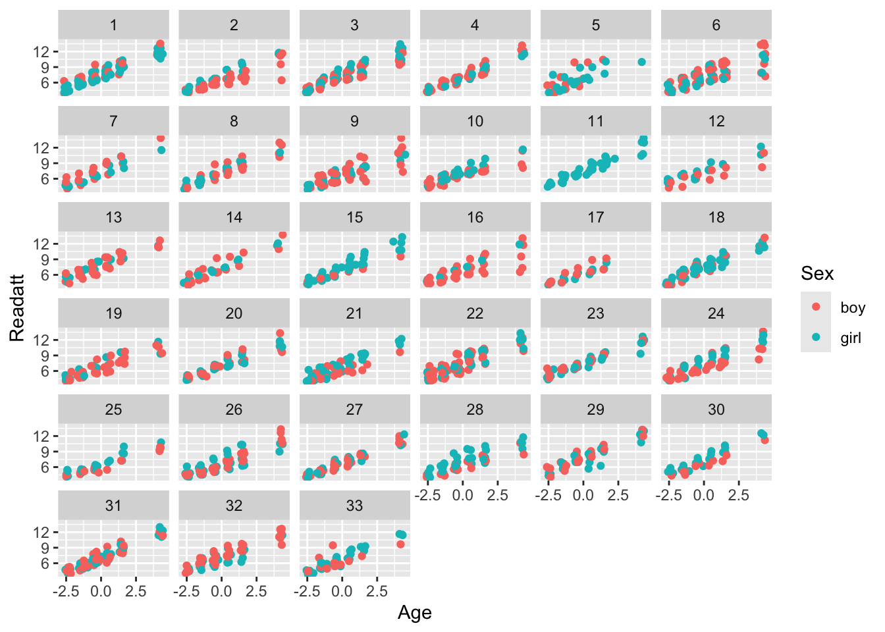
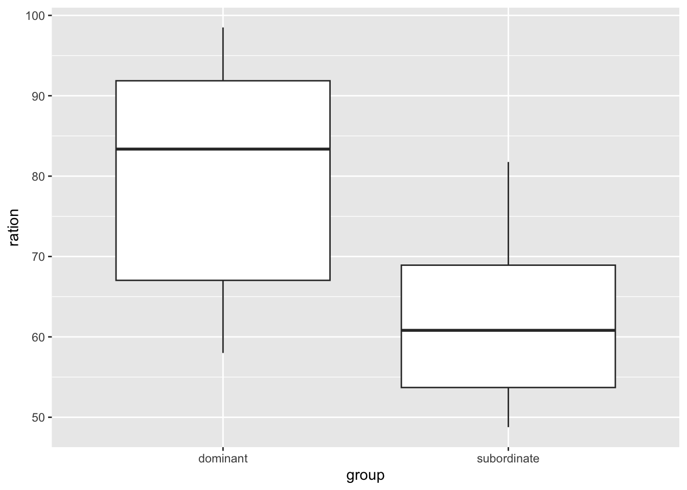

1.4 Further examples of mixed models
1.4.1 Childhood growth
An initial model can be written as \[ y_{ijk} = \alpha + \beta x_{ij} + \gamma_k + \varepsilon_{ij} , \] where \(y_{ijk}\) denotes the \(j\)th measurement for subject \(i\), with the sex groups identified through the subscript \(k\). In addition to the regression effect on \(x\), the \(\gamma_k\) capture the mean adjustment due to sex. The plot below superimposes the fitted model on the data. As expected, this model is too simple as it does not capture the variation across subjects. Some lie consistently above the regression line and other consistently below.
ortho_model_0 <- lm(distance ~ age + Sex, data = Orthodont)
ggplot(Orthodont, aes(age, distance, col = Sex)) + geom_point() +
geom_line(aes(y = fitted(ortho_model_0))) + facet_wrap(~ Subject)
This can be addressed by introducing a random effect which allows an adjustment to the intercept for each subject:
\[ y_{ij} = (\alpha + a_i) + \beta x_{ij} + \varepsilon_{ij}. \] where \(a_i \sim N(0, \sigma^2_a)\). The plot below shows this to be a much better description of the data. The estimates of the parameters, with their standard errors, suggest that there is indeed a small sex effect, with a t-value around \(3\). We can also quantify the subject variation, which is estaimted to be larger than the residual variation.
library(lme4)
ortho_model_1 <- lmer(distance ~ age + Sex + (1 | Subject), data = Orthodont)
ggplot(Orthodont, aes(age, distance, col = Sex)) + geom_point() +
geom_line(aes(y = fitted(ortho_model_1))) + facet_wrap(~ Subject)
summary(ortho_model_1)$coefficients## Estimate Std. Error t value
## (Intercept) 17.7067130 0.83392247 21.233044
## age 0.6601852 0.06160592 10.716263
## SexFemale -2.3210227 0.76141685 -3.048294## Groups Name Std.Dev.
## Subject (Intercept) 1.8074
## Residual 1.4316
We should also pay attention to whether the fixed effects may be more complex. In particular, is there interaction between age and sex? The analysis below does indicate eome evidence for this.
ortho_model_2 <- lmer(distance ~ age * Sex + (1 | Subject), data = Orthodont)
ggplot(Orthodont, aes(age, distance, col = Sex)) + geom_point() +
geom_line(aes(y = fitted(ortho_model_2))) + facet_wrap(~ Subject)
summary(ortho_model_2)$coefficients## Estimate Std. Error t value
## (Intercept) 16.3406250 0.9813122 16.6518101
## age 0.7843750 0.0775011 10.1208235
## SexFemale 1.0321023 1.5374208 0.6713206
## age:SexFemale -0.3048295 0.1214209 -2.51051971.4.2 The strength of paste
A mixed effects model allows different (hierarchical) levels of error to be constructed. Each batch has its own ‘adjustment’ from the overall mean. Within each batch, each cask has its own further ‘adjustment’ from the overall and batch means. Within each cask, the individual within-cask measurements can be viewed as further ‘adjustments’ from the overall, batch and cask means. If we index the batches, casks and within-cask measurements by \(b\), \(c\) and \(w\), then we can express this in a model as: \[ y_{bcw} = \mu + \varepsilon_b + \varepsilon_{bc} + \varepsilon_{bcw} \] where \[ \varepsilon_{b} \sim N(0, \sigma^2_b), \hspace{3em} \varepsilon_{bc} \sim N(0, \sigma^2_c), \hspace{3em} \varepsilon_{bcw} \sim N(0, \sigma^2_w) \]
The lme4 package gives us the tools to fit such a model. The estimates of standard deviation at batch, cask, and within-cask levels suggests that the cask level is where the variation is strongest. Another look at the plot shown earlier in this chapter does suggest that this is indeed the case.
library(lme4)
pastes_model <- lmer(strength ~ 1 + (1|batch/cask), data = Pastes)
summary(pastes_model)$coefficients## Estimate Std. Error t value
## (Intercept) 60.05333 0.6768702 88.72208## Groups Name Std.Dev.
## cask:batch (Intercept) 2.90408
## batch (Intercept) 1.28737
## Residual 0.82341When using any model, we would like to have some reassurance that it describes the data adequately. Plot of residuals provide an informal, but very useful, way of checking this. If the model is adequate then the residuals should simply display random variation, with no obvious patterns or structure. The plot below reassures us that the model is an adequate fit.

1.4.3 The sleep deprivation study
Example: The sleep deprivation study
Belenky et al. (2003) describe an experiment where the reaction times of subjects were recorded after different numbers of days of sleep deprivation. How should we model the relationship between reaction time and sleep deprivation while properly including a description of the sources of variation?
A subset of the data reported by Belenky et al. (2003) is available in the
sleepstudydataframe of thelme4package.
Initial plots shows an upward trend in mean reaction time as the number of days os sleep deprivation increases. That is entirely expected. There is also considerable variability across subjects.
## 'data.frame': 180 obs. of 3 variables:
## $ Reaction: num 250 259 251 321 357 ...
## $ Days : num 0 1 2 3 4 5 6 7 8 9 ...
## $ Subject : Factor w/ 18 levels "308","309","310",..: 1 1 1 1 1 1 1 1 1 1 ...library(ggplot2)
ggplot(sleepstudy, aes(Days, Reaction, col = Subject)) + geom_line()
ggplot(sleepstudy, aes(Days, Reaction)) + geom_point() +
facet_wrap(~ Subject)
A model which includes a fixed effect for Days and a random effect for Subject is a natural starting point. The fitted values for this model do not track the data very effectively, with some subjects showing a stronger regreession slope and others a weaker one.
sleep_model_1 <- lmer(Reaction ~ Days + (1 | Subject), data = sleepstudy)
ggplot(sleepstudy, aes(Days, Reaction)) + geom_point() +
geom_line(aes(y = fitted(sleep_model_1))) + facet_wrap(~ Subject)This suggests that we might do better with a model which allow random variations in both intercept and slope for each subject. The plot below suggests this to be a much better fit.
\[ y_{ij} = (\alpha + a_i) + (\beta + b_i) x_{ij} + \varepsilon_{ij}. \] where \[ a_i \sim N(0, \sigma^2_a), \hspace{3em} b_i \sim N(0, \sigma^2_b), \hspace{3em} \]
sleep_model_2 <- lmer(Reaction ~ Days + (Days | Subject), data = sleepstudy)
ggplot(sleepstudy, aes(Days, Reaction)) + geom_point() +
geom_line(aes(y = fitted(sleep_model_2))) + facet_wrap(~ Subject)
The evidence for the superiority of the model with this form of random effects can be evaluated in a more formal model comparison.
## Bootstrap test; time: 11.95 sec; samples: 1000; extremes: 0;
## large : Reaction ~ Days + (Days | Subject)
## Reaction ~ Days + (1 | Subject)
## stat df p.value
## LRT 42.139 2 7.072e-10 ***
## PBtest 42.139 0.000999 ***
## ---
## Signif. codes: 0 '***' 0.001 '**' 0.01 '*' 0.05 '.' 0.1 ' ' 11.4.4 Reading attainment in primary school
Example: Reading attainment in primary school-children
These data arose from a longitudinal study of a cohort of 407 pupils who entered 33 multi-ethnic inner London infant schools in 1982, and who were followed-up until the end of their junior schooling in 1989. The reading ability of pupils was tested on up to six occasions: annually from 1982 to 1986 and in 1989. Data are also available on the age of the pupils at the occasions when testing was performed and also their sex and ethnic group. The pupils took a variable number of the assessments and so the data are unbalanced. (Data source: Statistics in Education by Ian Plewis.)
The data set has eight columns:
- School Number (1 to 33)
- Pupil Number (1 to 751)
- Assessment Occasion (1 to 6)
- Reading attainment score
- A standardised reading score (to be ignored here)
- Ethnic Group (white or black {African Caribbean})
- Sex (boy or girl)
- Age (in years, but mean-centred)
The questions of interest are:
- How does reading ability develop as children grow older?
- Does this development vary from pupil to pupil or from school to school?
- If so, does it vary systematically from one type of pupil to another (e.g. boys vs girls, white vs black or both), and according to the characteristics of the school?
First we read the data.
ggplot graphics again provides a simple way of producing some attractive and helpful visualisations.
library(ggplot2)
ggplot(d, aes(Age, Readatt)) + geom_point() +
facet_grid(Ethnicity ~ Sex)
ggplot(d, aes(Age, Readatt, col = Sex)) + geom_point() +
facet_wrap(~ School)
We need to think carefully about how the variability should be modelled. For the moment, we will include only Age in the fixed effects, as this is the variable which clearly influences reading ability strongly. A random effect for each pupil, which allows them to display greater or lesser individual ability, is a good starting point. A residual plot helps us to assess the adequacy of this model, in an informal manner. Some non-random patterns suggest that we need to improve the model.

Another plot may help. This one shsows the trajectory of each individual over time. An interesting feature is a suggestion that these trajectories ‘fan out’ a little over time. This may suggest that pupils who are good readers at an early stage improve their reading ability over time at a greater rate than those who are poorer readers. This sounds plausible.

We can incorporate this into a model by describing these trajectories through straight lines (plus random error) whose slopes are described by random effects. The lme syntax enables this to be specified easily. The residual plot nolonger shows non-random features and a formal test confirms that the simple random effects model is inadequate, in comparison with the model which allows random slopes.
The residual plot has improved. We might also confirm the suitability of the random slopes model by performing a more formal model comparison.
## refitting model(s) with ML (instead of REML)## Data: d
## Models:
## model1: Readatt ~ Age + (1 | School/Pupil)
## model2: Readatt ~ Age + (Age | School/Pupil)
## npar AIC BIC logLik deviance Chisq Df Pr(>Chisq)
## model1 5 3793.3 3820.6 -1891.6 3783.3
## model2 9 3202.7 3252.0 -1592.4 3184.7 598.57 4 < 2.2e-16 ***
## ---
## Signif. codes: 0 '***' 0.001 '**' 0.01 '*' 0.05 '.' 0.1 ' ' 1Now that our model has a good random effects structure, we can examine the fixed effects in greater detail. The summary gives no evidence of an ethnicity effect, but does show a sex effect with girls producing a better average performance, in addition to the age effect which we already know is present.
model3 <- lmer(Readatt ~ Age + Sex + Ethnicity + (Age | School/Pupil),
data = d)
summary(model3)$coefficients## Estimate Std. Error t value
## (Intercept) 7.11786474 0.08078526 88.108455
## Age 0.99302519 0.01567750 63.340790
## Sexgirl 0.13267761 0.06133111 2.163300
## Ethnicitywhite -0.09410636 0.06497236 -1.448406It would be wise for us to examine whether interactions might be present. That is left as an exercise.
As a further exercise, check what conclusions are reached if the random effects structure is simply ignored.